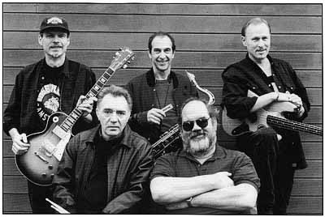

2000г. John "J.P." Paulus - guitar, Adolfo "Fito"/"The Godfather of the Boogie"" de la Parra - drums, vocals, Stanley "The Baron" Behrens - harmonica, sax, flute, vocals, "Dallas" Hodge - vocals, guitar, Greg "The Gator" Kage - bass guitar, vocals.